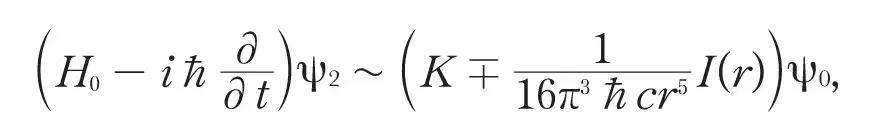
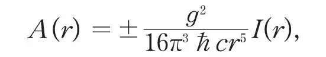
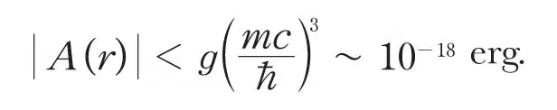

中文
中文Ig. Tamm
Editor’s Note
Soviet physicist Igor Tamm, a pioneer in nuclear science and future Nobel laureate, here comments on Enrico Fermi’s recent theory of beta radioactivity, which assumes that protons and neutrons can be transmuted into one another while emitting or absorbing electrons, positrons and neutrinos. As Tamm argues, Fermi’s scheme suggests that the force binding nuclei might be an “exchange force” between nuclear particles, originating in the exchange of light particles in direct analogy to the photon-exchange process mediating the electromagnetic force. But a simple estimate of the magnitude of such a force yields a value that is far too small. Tamm’s result implied that physicists were still seeking another fundamental force, which would later became known as the nuclear strong force. 中文
FERMI1 has recently developed a successful theory of β-radioactivity, based on the assumption that transmutations of a neutron into a proton and vice versa are possible and are accompanied by the birth or disappearance of an electron and a neutrino. 中文
This theory implies the possibility of deducing the exchange forces between neutrons and protons, introduced more or less phenomenologically by Heisenberg. (This idea occurred also quite independently to my friend, D. Iwanenko, with whom I have since had the opportunity of discussing the question.) Consider two heavy particles a and b, a being in a neutron and b in a proton state. If a becomes a proton and b a neutron the energy remains unchanged. Now these two degenerate states of the system may be linked up by a two-step process: the emission of an electron and a neutrino by the neutron a which becomes a proton, and the ensuing re-absorption of these light particles by the proton b which becomes a neutron. The energy of the system will be in general not conserved in the intermediate state (compare the theory of dispersion). The emission and re-absorption of a positron and neutrino may also take place2. In this way the two degenerate states of the system considered are split into two energy states, differing by the sign of the exchange energy. 中文
Since the rôle of the light particles (ψ-field) providing an interaction between heavy particles corresponds exactly to the rôle of the photons (electromagnetic field), providing an interaction between electrons, we may adapt for our purposes the methods used in quantum electrodynamics to deduce the expression for Coulomb forces. 中文
Putting ψ = ψ0 + gψ1 + g2ψ2 + . . ., where g is the Fermi constant (~4 ×10–50 erg. cm.3), and using the theory of perturbations and retaining only that part of ψ which corresponds to the absence of light particles in the initial and final states, we obtain

where K is an infinite constant, r is the distance between a and b and I(r) is a decreasing function of r, which is equal to 1 when r ≪ ħ/mc (m is the mass of the electron). Neglecting K, one would obtain the same result if one introduced directly in the wave equation of the heavy particles an exchange energy A (r):

the sign of A(r) depending on the symmetry of ψ in respect to a and b. Introducing the values of ћ, c and g, we obtain
|A(r)| ≪ 10－85r－5 erg.
Thus A(r) is far too small to account for the known interaction of neutrons and protons at distances of the order of r ~ 10–13 cm. 中文
If the difference of masses of the neutron and of the proton is larger than the sum of the masses of an electron and a neutrino, the emission of light particles by a heavy particle may take place without violation of the conservation of energy. But again the corresponding value of the exchange energy may be shown to be far too small

Our negative result indicates that either the Fermi theory needs substantial modification (no simple one seems to alter the results materially), or that the origin of the forces between neutrons and protons does not lie, as would appear from the original suggestion of Heisenberg, in their transmutations, considered in detail by Fermi. 中文
(133, 981; 1934)
Ig. Tamm: Physical Research Institute, State University, Moscow.
References:
1. Fermi, Z. Phys., 88, 161; 1934.
2. Wick, Rend. R. Nat. Acad. Lincei, 19, 319; 1934.